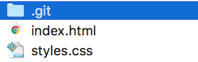
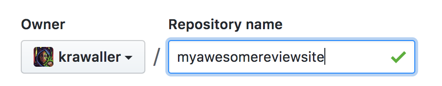
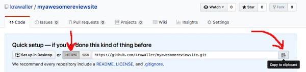
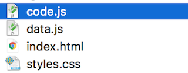

Getting started
CSS refresher
Some useful patterns
Make sure we have the CSS skills needed for the task ahead.
Let's repeat a few useful CSS patterns:
- apacking the box
- bcentering a block horisontally
- cselecting via attributes
- dlimiting an image width
- epreventing text selection
- fcolumn layout
The box model used to represent a node looks like this:

This means that if you apply padding it goes inside an eventual border, and will be coloured by the background.
While margin won't be, since it is in essence outside the element.
We can center a block horisontally in many different ways. Here's a common solution:
.contentBlock {
margin: 0 auto;
}
Note that this only works if the block has a set width, otherwise it'll take up the full width and we won't see any centering!
There is a distinct possibility you might soon need to select element via attributes. This is done using square brackets:
[data-class=skeleton] {
/* spooky styles go here */
}
See the MDN rating docs for the full available syntax.
We can limit an image's width using the max- prefixed dimensions:
.myImage {
max-width: 300px;
max-height: 400px;
}
When we use text elements for interaction we often want to...
- prevent selection
- make pointer indicate clickability
.myElem {
user-select: none;
cursor: pointer;
}
To lay out children of an element as columns we use flexbox:
.container {
display: flex;
flex-direction: row;
}
By default the columns will get equal width. If you have fixed-width columns you can make the other columns share the leftover space by giving them:
.columnThatShouldGrow {
flex-grow: 1;
}
Note that sized images can behave weirdly when used as flexbox children.
Prevent this by wrapping them in a div!
Exercise - static content
Laying the foundation
Here's what we're going for:

Here's the battle plan
- acreate a project folder
- badd html file
- cadd css file
Create folder somewhere to host our movie review project. Open that folder in Visual Studio Code.
Add a new file called index.html.

Make VSC give you a base to start by entering...
html:5
...at the top of the file and then hit tab. Voilà, you get a full HTML document!
Now flesh out the document with the HTML needed to get the same contents as in the screenshot!
Although, of course, you are free to choose any movie.
Your review should contain the exact same parts as mine:
- an image
- a title
- a short text
- a list of notable actors
Regarding the image, don't download it locally! Instead simply link to it online.
<img src="http://bit.ly/kvalitetsrullebild">
Time to add a coat of paint!
Create a new file in our folder called styles.css:

Connect it via a link element in the head of index.html.
<link rel="stylesheet" href="styles.css">
Now add some CSS in that file to...
- make the site centered horisontally
- lay it out in two columns
- size the image so it isn't too big or small
- tweak the rest as you please!
You are done when...
- double-clicking
index.htmlshows the review in a browser - it looks ok (don't spend too long!)
If you get stuck, see the Static solution.
Git and Github
The tools of the trade
Make sure we have an understanding of Git and Github.
Chances are very slim that you'll be able to do modern web work without using...
- Git for version controlling and collaboration
- Github for an online-hosted master Git repo
Probably you're already up and running (?), but here's a condenced guide for common patterns:
- aFirst-time setup
- bThe idea of a commit
- cThe commit flow
- dExcluding files
- eSeeing what changed
- fA log of changes
- gCentral master repo
If this is your first time with Git, you will want to start by configuring Git to recognize your name and email address.
git config --global user.name "Your Name Here"
git config --global user.email "your_email@youremail.com"
Git centers around the idea of a commit. We make a commit for each change you wish to record in the system
A commit consists of:
- A snapshot of all the files
- A commit message
- An author
- A date
In Git, committing is a two-step process

The add command places a file in the staging area
Below is given that the README file exists
$ git add README.md
The commit command then takes the contents of the
staging area, and creates a commit
$ git commit
[master (root-commit) beb9dfd] Add a README.
1 files changed, 1 insertions(+), 0 deletions(-)
create mode 100644 README
For existing files, add will place the changes to that
file into the staging area, so you can commit changes
with two commands:
$ git add README
$ git commit
(A shorthand for these steps: git commit README)
We want to avoid tracking generated files with Git. Let's say these are created by our build step:
# On branch master
# Untracked files:
#
# main.exe
# main.obj
# util.obj
The solution avoid tracking them is to add a .gitignore file
Content for .gitignore
*.exe
*.obj
Then commit the file
$ git add .gitignore
$ git commit
The .gitignore file won't be of immediate use, but we'll employ it in the next chapter.
While git status gives you an overview of your changes, git diff shows what changed.
$ git diff
diff --git a/src/util.c b/src/util.c
index 9fe5927..e826a45 100644
--- a/src/util.c
+++ b/src/util.c
@@ -1,7 +1,7 @@
#include <stdio.h>
-void print_ten_times(char *msg) {
+void print_n_times(char *msg, int n) {
int i;
- for (i = 0; i < 10; i++)
+ for (i = 0; i < n; i++)
printf(msg);
}
This is so useful that VSC has a tab for it:

Typing git log shows a log of all the commits, most recent commit first
commit e20962ebed7b0288922320f217a6a3ab9371727c
Author: jnthn
Date: Wed Apr 18 18:09:02 2012 +0200
Add a .gitignore.
commit eae16e7a7f34d1208ca8267c2fabbbc1eb8e3640
Author: jnthn
Date: Wed Apr 18 17:56:55 2012 +0200
Factor printing out to a utility file.
...
The log command has more options than you can possibly imagine; one fairly useful one is:
$ git log --oneline
e20962e Add a .gitignore.
eae16e7 Factor printing out to a utility file.
887f06c Start le coding!
869cec3 Update README.
8356287 Add a README.
To learn about (literally) dozens more, see:
$ git help log
The most common use of remotes is to set up a central repository

There are a range of hosted Git services out there, which can host your central repository for you
GitHub is the largest today, offering free hosting for public repositories (used by thousands of open source projects) and private hosting for individuals and organizations
Creating an account is free, and easy.
If you haven't already got one, simply go to https://github.com/ and follow the directions!
After creating a repository on GitHub, we need to tell our local Git repository about it by adding it as a remote:
$ git remote add origin https://github.com/<user>/<repo>.git
Since you can have multiple remotes, you have to specify a name as well as the address
The convention used by almost all Git users is to give the central repository remote the name origin, but there's no technical magic to the name.
Pushing is taking commits we have locally and copying them to a remote.
Our first push should use the -u flag:
$ git push -u origin master
After that you can simply push:
$ git push
Exercise - set up repo
Becoming part of the world
Goal: Track our code in an online git repo!
Here's what we need to do:
- ainit git repo locally
- bcreate github repo
- cadd remote to local repo
- dstart tracking files
- edo initial commit
- fpush to github repo
Initialise a git repo in the project folder by navigating to it in a terminal and type:
git init
This will create an invisible .git folder where Git does its magic:

(depending on your OS settings this might be hidden)
Now log into Github and create a new repo using the plus button in the top-right corner:

Give the new repo a fitting name:

No other settings need to be filled. When you're done, hit the green Create repository button at the bottom!
This will transition you to github.com/yourusername/yourreponame. Here, make sure HTTPS is selected and then hit the far-right button to copy the HTTPS path!

If you get tired of typing your password all the time:
You can switch your remote to use ssh if you have time left after finishing the exercise.
Now we need to add the Github repo as a remote in our local one! In the terminal, while somewhere inside your local gitrepo, type:
git remote add origin https://some.url
...where you simply paste the final part to be the correct URL for your repo!
We must now tell our local repo to track the files!
Since we want to track everything, we can cheat by simply doing this...
git add .
...in the root of our repo.
The former command will stage the initial state of those files. Let's commit it!
git commit -m "initial commit"
Now we must tell our remote repo about the changes we've made:
git push -u origin master
If you reload your repo in the weppage, you should now see your files!
You are done when...
- There's a repo on Github...
- ...that contains all of the code
DOM nodes
node juggling
Repeating some DOM node handling methods.
Let's refresh...
- ahow to get references to DOM nodes
- bhow to manipulate a DOM node
- chow to create DOM nodes
We can get a reference to a DOM node in a bunch of different ways. Some methods return a single element:
let node = document.body;
let node = document.getElementById("someId");
let node = document.querySelector("div > p:first-child");
..while others give us a list of matching nodes:
let nodes = document.getElementsByTagName("div");
let nodes = document.getElementsByClassName("someClass");
let nodes = document.querySelectorAll("div > p:first-child");
From a node reference we can access the element above that element...
node.parent
...or the elements below:
node.children
Once we have a node reference there's a huge number of things we can do with it! The DOM API is enormous.
But here we'll just show a few useful things!
We can add a class...
node.classList.add("someClass");
...or remove it...
node.classList.remove("someClass");
...or test if it has a certain class:
node.classList.contains("someClass") // true or false
We can change the text content of a node...
node.innerText = "Hello world!";
...or HTML content:
node.innerHTML = "<strong>Hello world!</strong>";
In both cases we erase eventual previous content.
What about attributes on elements?
<div data-ref="Ek#AfZW2">
We can query them...
node.getAttribute("data-ref"); // "Ek#AfZW2"
...and set them:
node.setAttribute("data-ref","someNewRef");
Finally, let's see how we create DOM nodes!
let newNode = document.createElement("div");
Just instantiating a node like this doesn't do anything - it isn't connected to the document.
In order to accomplish that we need to append or prepend the node to a parent node:
let existingNode = document.getElementById("someId");
existingNode.appendChild(newNode);
There is of course a corresponding .prependChild too.
Exercise - Data migration
Goal: no more hardcoded data in the HTML!
Here's the plan to accomplish this:
- amigrate data
- bmake HTML elements referrable
- cmake renderMovie function
- dbootstrap application
As a first step, let's move the data from the HTML to a data variable. Create a new data.js file where we can do our work!

Then include this in index.html via a script element:
<script src="./data.js"></script>
in this file, declare a movieData variable. This will hold an object containing the movie data!
let movieData = {
// movie info will go here
};
Now start strip out the data from the template and move it into the object!
For each piece of data you'll have to...
- make up a suitable key.
- add the key and the corresponding value to the object
- remove the data from the HTML
For instance, the movie title...
<h2>Inception</h2>
...might end up like this...
let movieData = {
title: "Inception",
// rest of data will follow here
};
...leaving the HTML like this:
<h2></h2>
Keep adding the other pieces of data to the object until no data remains in the HTML template!
The list of actors should end up as an array of strings...
["Leonardo DiCaprio", "Ellen Page", "Tom Hardy"]
...and the HTML list should be an empty ul:
<ul></ul>
The plan of course is to programmatically add the data to the document instead. This requires getting references to the nodes to insert the various pieces of data in the correct places!
To make this easier, add id:s or classes as you see fit to the now-empty elements in index.html. For example:
<h2 id="movietitle"></h2>
Side note; with some clever use of CSS selectors it's possible to get the correct nodes without classes or id:s.
So, if you feel up for it, feel free to skip this step!
Let's create a new code.js file to hold the movie rendering logic:

Add this too to index.html via a script element.
Inside that file, create a renderMovie function:
function renderMovie(movie){
// rendering logic will go here
}
This function will receive a movie object like the one in data.js, and update the document by mutating the right nodes with the right data!
For example, dealing with the title:
function renderMovie(movie){
document.getElementById("movietitle").innerText = movie.title;
// rest of data will be inserted here
}
Now finish the function so that it renders all movie data!
For the list of actors you have a choice; you can...
- create list nodes individually and append them to the
ul - build an HTML string of all actor li:s and use
innerHTMLon theulinstead.
Finally we need to bootstrap our application. In our case this is easy - simply call renderMovie with the dataat the bottom ofcode.js`!
renderMovie(movieData); // movieData variable created in data.js
You are done when...
- The review looks just like before
- There's no data in the HTML
And of course you'll be a good citizen and keep doing the git flow while you work!
If you get stuck, see the Data solution.
DOM event refresher
Gotta catch 'em all
Make sure we have DOM event handling fresh in our heads.
Another thing we can do with a node reference is to make code run when things happen to it.
The API for this is simple:
node.addEventListener("nameOfEvent", functionToRun);
The function we pass in is called an event handler.
Here's a simple example:
function goBoom(){
alert("You pushed the button. BOOM goes the world!");
}
node.addEventListener("click", goBoom);
Remember to pass in a reference to the event handler, as opposed to executing it!
// this is wrong!
node.addEventListener("click", goBoom());
It is quite common to define the event handler in place as an anonymous function:
node.addEventListener("click", function(){
alert("You pushed the button. BOOM goes the world!");
});
The event handler is called with an event object, which might be useful for some events:
inputFieldNode.addEventListener("keyup", function(e){
if (e.key === "Enter" || e.keyCode === 13){
submitForm();
}
});
Exercise - add user rating
Because your opinion matters
Goal: allow the user to rate the movie!
Here's the plan:
- aadd a row of rating stars
- bmake
changeStarRatingfunc - cadd event listeners to all stars
Let's add a ratings row to the review! Here's what we want:

We'll make it easy for us and use an HTML entity for the star:
<span>★</span>
Our ratings row should be a <div> with 5 such stars.
Each filled star should be black:
selectorForFilledStars {
color: black;
}
...and the empty stars grey:
selectorForEmptyStars {
color: rgb(180, 180, 180);
}
...what the selectors for filled and empty should be? Up to you! :)
The easiest way is probably to add a starX id to each star, where X is the number 1-5. Then use that id to select the star as necessary.
But there are many ways to solve this problem!
In our code.js file, create a changeStarRating func! It should take a grade between 1-5, and manipulate the DOM accordingly:
function changeStarRating(grade){
// Update stars so they appear correctly according to given grade!
}
To test your work, simply add a call to the bottom of code.js:
changeStarRating(3);
Now for the interaction - allow the user to click on the stars!
Clicking on the first star should trigger changeStarRating(1), etc.
You are done when...
- There's a row of stars
- Clicking a star fills all stars to that point
If you get stuck, see the Interaction or Interaction alt solutions.
jQuery refresher
What the fuzz is about
Reacquaint ourselves with jQuery.
You've likely come across jQuery, a library that makes the DOM easier to work with.

Let's see how some common tasks are done with jQuery:
- anode references
- bnode manipulation
- cnode creation
- devent handling
- eevent delegation
We get node references by passing a CSS selector to the jQuery function:
// returns a jQuery collection of all elements matching that selector
let collection = jQuery(".someClass");
You'll rarely see jQuery being used though, instead we work with the $ alias:
let collection = $(".someClass");
Here's some common manipulations:
collection.html("<strong>verboten</strong>");
collection.text("unavailable");
collection.addClass("hide");
collection.attr("data-ref","Ek#AfZW2");
collection.empty(); // killing all children
Note that unlike the DOM, jQuery doesn't have different methods for getting 1 or many nodes.
We can manipulate the resulting collection as if it was one node, and jQuery will do the changes to all nodes.
That means that this regular JS...
let nodes = document.querySelectorAll(".french");
for(let node in nodes){
node.innerHTML = "<em>click to translate</em>";
}
...can be done like this in jQuery:
let collection = $(".french");
collection.html("<em>click to translate</em>");
Commonly we skip the variable and chain instead:
$(".french").html("<em>click to translate</em>");
Now to see how we create new elements with jQuery!
Normally, if you pass a string to jQuery, it'll treat it as a CSS selector and collect all matching element:
let collection = $(".blogpost > p:first-child");
However, if we pass in a string containing HTML code, jQuery will instead create the matching element!
let newCollection = $("<span>");
This HTML code can contain multiple elements as well as attributes:
let newCollection = $(`
<div class="container">
<h2>Hello world!</h2>
<p>All this was created in a multiline string sent to jQuery!</p>
</div>
`);
Then we can append the new node:
$(selectorForParent).append(newCollection);
There's also a reversed syntax:
newCollection.appendTo(selectorForParent);
Of course we could have simply used the .html method:
$(selectorForParent).html(stringWithNewHtml);
Event listeners are added using the on method:
$("#submitbtn").on("click",handleSubmission);
Although it's common to use the event-specific shorthands:
$("#submitbtn").click(handleSubmission);
jQuery also makes it very easy to do event delegation.
This is a powerful pattern that lets us listen to events on many elements - which might not even exist yet - using only a single event listener!
We accomplish this by listening for the event on an ancestor element, and then letting the event bubble up to there from the element we're actually interested in.
Consider an app with this UI:
<ui id="options">
<li data-option-id="gowest">Go west</li>
<li data-option-id="opendoor">Open the door</li>
<li data-option-id="turnback">Turn back</li>
</ul>
The contents of the #options list will change as the user clicks around.
Instead of adding a listener everytime we create an option, we can have a single listener on the list which we filter to only handle clicks on options:
In jQuery we do this by passing a filtering selector after the event name to .on:
$("#options").on("click", "li", function(e){
let opt = $(e.target).attr("data-option-id");
gameEngine.executeOption(opt);
});
Exercise - jQuerify
Drinking the cool-aid
Goal: Clean up our code by using jQuery
- ahook in jQuery in our app
- brefactor changeStarRating
- crefactor renderMovie
- drefactor event listeners
Bring jQuery into the project via a script element in index.html referencing the CDN version:
<script src="https://code.jquery.com/jquery-3.2.1.min.js"></script>
Remember to place that script element before code.js, otherwise we won't be able to use jQuery in our code!
With jQuery brought in, time to start using it! Start by refactoring changeStarRating, using jQuery instead of naked DOM manipulation.
Next, refactor renderMovie to use jQuery instead.
Finally, hook up the event listeners with jQuery. The star rating is a prime candidate for some event delegation!
You are done when...
- The app looks and works the same
- We're using jQuery throughout
If you get stuck, see the jQuery or jQuery alt solutions.
As a stretch task: Although the performance is rarely an issue, it is considered bad form to reselect the same element when we don't really have to.
This can be fixed by caching selected elements.
For example, inside renderMovie, we probably do something like:
$(".movietitle").text(movieData.title);
But the $(".movietitle") selector will return the same thing each time!
We can therefore do all selections in the bootstrapping part...
let ui = {
title: $(".movietitle"),
// rest here...
}
...and instead use that inside the functions:
ui.title.text(movieData.title);